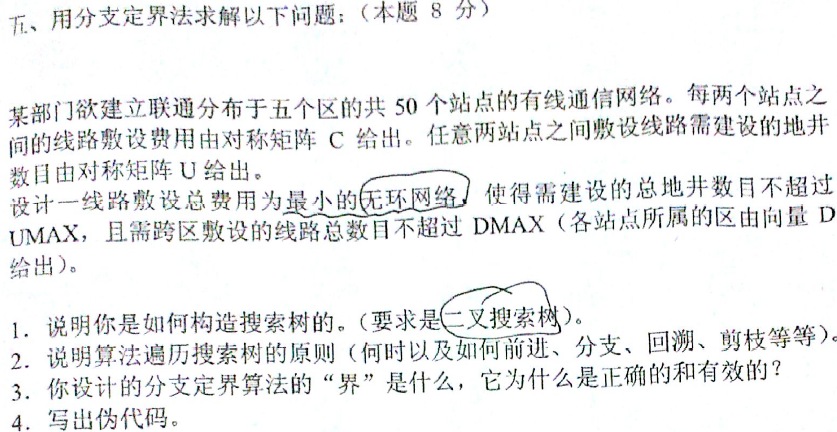

一、判断题：类似：分支定界一般用DFS
二、小题：如：NP完备（一问题是否为NP，为何？证明）
三、3大题：
- 其他：（分治可能性居多）
- DP
- 分治定界法
一、Dynamic programing问题求解：
二、Branch and Bound
分支界限法类似于回溯法，也是一种在问题的解空间树T上搜索问题解的算法。但在一般情况下，分支界限法与回溯法的求解目标不同。回溯法的求解目标是找出T中满足约束条件的所有解，而分支界限法的求解目标是找出满足约束条件的一个解，或是在满足约束条件的解中找出使某一目标函数值达到极大或极小的解。
（回溯法以深度优先的方式搜索解空间树T，而分支界限法则以广度优先 或以最小耗费优先的方式搜索解空间树T？？？深度优先！！）
搜索策略：
在扩展节点处，先生成其所有儿子的节点（分支），然后再从当前的活节点表中选择下一个扩展节点。为了有效选择下一扩展节点，以加速搜索的进程，在每一活节点出，计算一个函数值（界限），并根据这些已计算出的函数值，从当前活节点列表中选择一个最有利的节点作为扩展节点，是搜索朝着解空间树上有最优解的分支推进，以便尽快地找出一个最优解。
第一：建立搜索树（近似，组织，界限）
二叉搜索树：
- 对于n个节点的问题定义一个m层的二叉搜索树，对于完全图问题，m等于节点对的个数。
- 为每条边编号，从1到m。
- 每层的分支对应于是否把某条边添加到解集中的决策。
- 定义沿左分支前进表示选择该边，沿右分支前进表示不选该边。
第二：规划以遍历搜索树（Regulations for traversing the search tree）
遍历搜索树：
显然，当该二叉树中的所有节点都被访问过时，可以找到一个最优解。
- 总是从树的根开始。
- 当下行时，总是先沿左分支进行。
- 当有如下情况之一发生时，进行回溯:
- 当前选择的边使得解不可行。
- 已经找到一个解。
- 当从左分支回溯到某顶点时，接着沿其由分支向下进行。
- 当从右分支回溯到某顶点时，接着回溯到其父顶点。
第三：对搜索树剪枝（Pruning the search tree -- bound）
上界（Upper Bound）：目前已经得到的一个解的总花费。
下界（Lower Bound）：（搜索树的每个顶点代表由原始问题得到的一个子问题。子问题与整个问题的区别在于，在子问题中，有些边已被定义为不选，而另外一些边则必须选用）。
若花费大于目前已求出的解的花费（上界），以当前节点为根的子树被剪枝。
第四：使剪枝更快速（Make the pruning faster）
如果编号较小、在搜索中位于较高阶段的边的容量较小时，目前的算法会暴露出一个弱点：在该阶段花费大量的时间搜索其子树，而实际上并不存在可行解。
预测是否违背能力限制（Predicting Violation of Capacity Constraint ）
2012 分支定界题

参考答案：
1）
根据线路（l1,l2,...,lm）的取舍来建立一棵m层的二叉搜索树。第i层的所有左分支表示铺设线路li，右分支表示不铺设线路li。如果存在可行解，遍历该二叉树即可找到最优解。
（相关阅读：为每条边编号，从1到m；定义一个m层的二叉搜索树；每层的分支对应于是否把某条边添加到解集中的决策；定义沿左分支前进表示选择该边，沿右分支前进表示不选择该边）
2）
- 前进：当前节点未被剪枝并且仍有子节点时继续前进
- 分支：先遍历左分支，再遍历右分支
- 回溯：左右分支都被遍历时返回父节点（当前选择的边使得解不可行或者已经找到一个解）
- 剪枝：剪枝条件①：
- 存在环路
- 当前地井数 + 地井数下界 > UMAX
- 当前跨区铺设线路数 + 跨区铺设线路下界 > DMAX
- 当前费用 + 费用下界 >= 已知最优方案的费用
- or（不佳的剪枝条件）②：
- 存在环路
- 当前地井数 > UMAX
- 当前跨区铺设线路数 > DMAX
- 当前费用 >= 已知最优方案的费用
3）①子问题的下界为费用下界、地井数下界、跨区线路数下界。费用下界是根据剩余站点数量定义的，累计最小的路线花费即可得到。由于限制被极度弱化，所以非常粗糙，但是正确有效。另外两个下界也类似。
父问题的上界是已知最优方案的费用
②UMAX、DMAX、以及已知最优方案的费用
（相关阅读：
上界（Upper Bound）：目前已经得到的一个解的总花费；
下界（Lower Bound）：搜索树的每一个顶点代表由原始问题得到的一个子问题。子问题与整个问题的区别在于，在子问题中，有些边已被定义为不选，而另外一些边则必须选用
若花费大于目前已求出的解的花费（上界），以当前节点为根的子树会被剪枝
4）
按费用从小到大排序所有路线l1,l2,l3,...,lm
排序计算子问题下界：
1、地井数下界：剩余站点数量->最小地井数
2、跨区线路数下界：剩余站点数量->最小跨区线路数
search(空集,l1)
返回最优结果
def search(线路集合S,当前线路l):
判断线路集合S是否合格，条件如下：
- 无环路
- 当前地井数 + 地井数下界 <= UMAX
- 当前跨区铺设路线数 + 跨区铺设线路数下界 <= DMAX
- 当前费用 + 构成网络还需要的边的数量 * 1的费用 < 已知最优方案的费用
如果合格：
当前网络已经覆盖所有站点：
记S为已知最优
否则若剩下的线路数有可能使所有站点构成网络：
search(SU{l}, l的下一条线路)
search(S,l的下一条线路)
2011分支定界题

参考答案：
1）可根据A外的51个国家定义一棵若干层的二叉搜索树。每个节点的左分支表示选择其代表的国家为下一个贸易顺序上的国家，右分支则表示不选择。构造搜索树需要两个辅助变量，之前的贸易顺序S（s为S的最后一个国家）和这一轮否决的国家V，初试S = <A>, V = 空集∅。任取可以和s国贸易的国家c（不属于S和V）置于树的当前生成位置，然后用（S' = <S, c>和V' = V ∪ ∅）生成左子树，用（S' = S和V' = V ∪ {c}）生成右子树。如果c不存在或者s = B则终止当前子树的生成。如此反复可以建立一棵二叉搜索树。
2）
- 前进：当前节点未被剪枝并且仍有子节点未被访问时即可继续前进
- 分支：先遍历左分支，后遍历右分支
- 回溯：左右分支都被遍历时返回父节点，达到回溯条件（当前时间+s国与B国贸易的最小税费对应的事件 <= t）时直接回溯
- 剪枝：剪枝条件如下：
- 当前税费 + s国与B国贸易的最小税费 >= 已知方案的税费
- 当前时间 + s国与B国贸易的最短时间 > t
3）子问题的下界为税费下界和时间下界，均可有Dijkstra算法得到，表示某国与B国贸易的最小税费和最短时间。两个结果均由弱化限制的方法得到的，所以是正确的，计算复杂度也不高，当然有效。
父问题的上界是已知的最优方案的税费，显然正确有效。
4）
使用Dijkstra算法得到子问题下界：
1、税费下界：某国与B国贸易的最小税费，顺便记录对应的事件和贸易顺序
2、时间下界：某国与B国贸易的最短时间
search(<A>, <V>)
返回最优结果
def search(贸易顺序S, 否决的国家V):
令s为S的最后一个国家
判断S是否合格，条件如下：
1.当前税费 + s国与B国贸易的最小税费 < 已知最优方案的税费
2.当前时间 + s国与B国贸易的最短时间 <= t
如果合格：
当前时间 + s国与B国贸易的最小税费对应的时间 <= t:
记<S,s国与B国贸易的最小税费对应贸易顺序(不包括s)>为已知最优
否则对与s国贸易的不属于S和不属于V的国家c：
search(<S, c>, V)
search(<S>, <V, c>)
三、分治算法
- 将问题的实例划分为几个较小的实例，最好具有相等的规模（一般来说就是这样分的，并且分为2个实例的居多，注意是递归划分）
- 对这些较小的实例求解（一般使用递归方法，但在问题规模足够小的时候也可采用另一个算法（即停止递归））
- 如有必要，合并这些较小问题的解，以得到原始问题的解（事实上，一个分治算法的精华就在于合并解的过程）
2011：

解法：
// num : 逆序数
num = 0;
Merge(Type a[], Type left, Type mid, Type right)
{
Type b[]; k=left;
i = left, j = mid+1;
while( i <= mid && j <= right)
{
if(a[i] > a[j])
{
num += mid – i + 1;
b[k++]=a[j++];
}
else
{
b[k++]=a[i++];
}
}
while(i<=mid)
b[k++]=a[i++];
while(j<=right)
b[k++]=a[j++];
for(i=left; i<=right ; i++)
a[i]=b[i];
}
MergeSort(Type a[], Type left, Type right)
{
if(left < right)
{
mid = (left + right) / 2;
MergeSort(a, left, mid);
MergeSort(a, mid + 1, right);
Merge(a, left, mid, right);
}
}
（PS：取一序列数演算下易知。如： 1 3 2 8 9 5 7 4 0 6 逆序数：20）
算法思路：以归并排序为基础，在两两集合合并的时候，如果前一个集合的元素a[i] > 后一个集合的元素a[j]，那么说明需要调整次序，即存在逆序数，逆序数num = num + mid + i；时间复杂度的迭代公式为： 因此算法的时间复杂度为T(n) = O(nlogn)；而蛮力法的事件复杂度为O(n^2)，当n数目比较大时，分治法计算规模远小于蛮力法。
因此算法的时间复杂度为T(n) = O(nlogn)；而蛮力法的事件复杂度为O(n^2)，当n数目比较大时，分治法计算规模远小于蛮力法。
四、变治法
通常把问题的实例变为一个更加容易求解的实例，然后利用对变化后的实例来求解，解决原来这个问题实例。（前提：两个实例是逻辑等价的）
变治思想有3种主要类型：
- 变换为同样问题的一个更简单或者更方便的实例—实例化简（Instance simplification）
- 预排序：排序时间+线性时间：O(nlogn)；如检验数组中元素的唯一性、模式计算（计算所有不同值出现的频率）
- 高斯消去法：把n个线性方程构成的n元联立方程组变换为一个等价的方程组（即它的解和原来的方程组相同）
- AVL树（一种特殊的二叉搜索树，它的任一节点的左子树深度和右子树深度相差不超过1）
- 变换为同样实例的不同表现—改变表现（Representation Change）
- 2-3树（一种可以包含两种类型节点的树：2节点、3节点）
- 霍纳法则（针对多项式的求值：不断地把x作为公因子从降次以后的剩余多项式中提取出来）
- 变换为另一个问题的实例，这种问题的算法是已知的—问题化简（Problem reduction）
- 综合除法
- 凸包：点的相对位置
- 解析几何：几何-代数
2012 变治

参考：
我的想法：采用变治思想，将问题实例变换为一个更简单更易计算的实例，先对整数序列进行排序，然后再查找。时间复杂度为：排序时间+查找时间 = O(logn)，蛮力法的时间复杂度为O(n^2)
sort(src);//对整数序列进行排序
count = 0;
num = src[0];
temp = floor(n / 2)
for( i = 0; i < n; i++)
{
if(num == src[i])
{
count ++;
if(count > temp)
{
cout << "Exist" << endl;
break;
}
}
else
{
num = src[i];
count = 1;
}
}
if(i == n)
cout << "Doesn't exist" << endl;
五、问答题相关
1、二叉查找树属于减治策略的三个变种中哪一个的应用？什么情况下二叉查找树表现出最差的效率？此时的查找和插入算法的复杂性如何？
参考答案：减治策略有三种主要的变种，包括减常量、减常数因子和减可变规模。
（1）二叉查找树属于减可变规模变种的应用。
（2）当先后插入的关键字有序时，构成的二叉查找树变为单支树时，树的深度等于n，此时二叉查找树表现出最差的效率。（当节点个数等于二叉查找树的高度时表现出最差的效率）
（3）此时的查找和插入算法的时间效率都为O(n)
2、何谓伪多项式算法？如何将一Monte Carlo算法转化为Las Vegas算法
参考答案：
（1）伪多项式算法是一种在L值的多项式时间内运行的算法，其中L是输入实例的最大数值。
（2）Las Vegas算法不会得到不正确的解。一旦用Las Vegas算法找到一个解，这个解就一定是正确解。但有时用Las Vegas算法会找不到解。而Monte Carlo算法每次都能得到问题的解，但是不能保证解的准确性。
转化：可以在Monte Carlo算法给出的解加上一个验证算法，如果正确就得到解，如果错误就不能生成问题的解，这样Monte Carlo算法便转化为了Las Vegas算法
伪多项式算法：网上阅读资料：http://www.cnblogs.com/zhurui1322/p/5362031.html
当一个算法的最坏时间复杂度是依据输入的数量级的时候，我们就称算法的时间复杂度是伪多项式时间（给一个wiki上的解释可能更好理解 若一个数值算法的时间复杂度可以表示为输入数值规模N的多项式，但其运行时间与输入数值规模N的二进制位数呈指数增长关系，则称其时间复杂度为伪多项式时间。这是由于，N的值是N的位数的幂，故该算法的时间复杂度实际上应视为输入数值N的位数的幂from wiki )
例如：统计一个数组中所有正数的出现频率。算法是先找到最大的数max，然后从1到max遍历每一个数，找到这个数在数组中的出现频率。这个算法需要的时间是取决于这个数组中最大的数的大小，所以说这个算法是伪多项式时间。换句话说，一个算法的时间复杂度只是根据输入元素的多少的话，我们认为这个算法是多项式时间算法。
3、构造AVL树和2-3树的主要目的是什么？他们各自有什么样的查找和插入效率？
参考答案：
（1）当先后插入的关键字有序时，构成的二叉查找树蜕变为单支树，树的深度等于n，此时二叉查找树表现出最差的效率，为了解决这个问题，可以构造AVL树或2-3树，使树的深度减小。一棵AVL树要求它的每个节点的左右子树的高度差不能超过1。2-3树允许一棵查找树的单个节点不止包含一个元素。（AVL树和2-3树能够维持树的平衡，避免树的退化）
（2）它们在最坏情况下插入和查找的事件复杂度均为O(logn)
4、写出0/1背包问题的一个多项式等价（ Polynomially equivalent）的判定问题，并说明为什么它们是多项式等价的。
参考答案1：
0/1背包问题：从M件物品中，取出若干件放在空间为W的背包里，给出一个能获得最大价值的方案。每件物品的体积（或重量）为W1,W2,...,Wn，与之对应的价值为P1,P2,...,Pn。
判定问题I：从M件物品中，取出若干件放在空间为W的背包里，是否存在一个解决方案，所获价值≥P*？每件物品的体积为W1,W2,...,Wn，与之对应的价值为P1,P2,...,Pn。
若判定问题I存在多项式时间的解法，则反复调用该算法就可以在多项式时间内解决0/1背包的优化问题。因而这个判定问题与原问题多项式等价。
参考答案2：
0/1背包问题的一个多项式等价判定问题是给定价值为V1,V2,...,Vn，重量为W1,W2,...,Wn的n个项和两个整数v*和w*，问是否存在一个子集S，使得 ，且
，且 。
。
，且。若存在0/1背包问题的多项式算法，则可用其在多项式时间内求解该判定问题，令背包容量等于W*，求出0/1背包问题的最优子集S，则可以通过判断S是否满足 来确定判定问题的解。
来确定判定问题的解。
来确定判定问题的解。若存在该判定问题的多项式算法，则可以在可能的价值范围内进行二分搜索，在各搜索点上解判定问题以确定0/1背包问题的最优解，令V=  可在O(log(V)) 时间内求得解。
可在O(log(V)) 时间内求得解。
可在O(log(V)) 时间内求得解。5、下面问题是否属于NP问题？为什么？
给定图G=（N,A）中的两个点p、q，整数c和t，图G中每条边的长度c(i,j)及遍历这条边的时间t(i,j)，问图G中是否存在一条由p到q的路径，使得其长度大于C，且遍历时间小于t？
参考答案：
这个问题属于NP问题。因为若给出该问题的一个解，可以在多项式时间内检验这个解的正确性。如给出一条由p到q的路径，可以在多项式时间内计算出它的长度及遍历时间，然后分别与C和t进行比较，从而可以判断这个解的对错。
P问题：能在一个多项式时间内解决的问题
NP问题：可以在多项时间内验证一个解的问题
（之所以定义NP问题，是因为通常只有NP问题才可能找到多项式的算法。我们不会指望一个连多项式地验证一个解都不行的问题存在一个解决它的多项式级的算法）
（显然，所有的P类问题都是NP问题：能多项式地解决一个问题，必然能多项式地验证一个问题的解）
人们想知道的是是否所有的NP问题都是P类问题：即究竟是否有P=NP? 通常所谓的“NP问题”，其实就是：证明或者推翻P=NP。
约化（规约）：
如果能找到这样一个变化法则，对任意一个程序A的输入，都能按这个法则变换成程序B的输入，使两程序的输出相同，那么我们说，问题A可约化为问题B。
（B的时间复杂度高于或者等于A的时间复杂度，也就是说B比A难）
人们想表达一个问题不存在多项式的高效算法时应该说它“属于NPC问题”
NPC（NP Completeness）问题：同时满足两个条件：1.它是一个NP问题;2、所有的NP问题都可以约化到它.
（证明一个问题是NPC问题：先证明它是一个NP问题，然再证明其中一个已知的NPC问题能约化到它）
既然所有的NP问题都能约化成NPC问题，那么只要任意一个NPC问题找到了一个多项式的算法，那么所有的NP问题都能用这个算法解决了，NP也就等于P了。
因此，给NPC问题找一个多项式算法台不可思议了，所以“正是因为NPC问题的存在，是人们相信P≠NP”
（逻辑电路问题（NPC类问题的鼻祖）：第一个NPC问题，其他所有的NPC问题都是由这个问题约化而来的。）
NP Hard问题：它满足NPC问题定义的第二条但不一定满足第一条（NP-Hard问题比NPC问题的范围广）
六、判断题相关
1、贪婪技术所做的每一步选择所产生的部分解，不一定是可行性的。
错误
贪心算法的核心：所做的每一步选择都必须满足：（1）可行的，即它必须满足问题的约束；（2）局部最优，即它是当前步骤中所有可行性选择中最佳的局部选择；（3）不可取消，即一旦做出，在算法的后续步骤就无法改变了。
2、一个正确的算法，对于每一个合法输入，都会在有限的时间内输出一个满足要求的结果。
错误
“正确” 一词的含义在通常的用法中有很大差别，大题可以分为以下4个层次：
- 程序不含语法错误
- 程序对于几组输入数据能够得出满足规格说明要求的结果
- 程序对于精细选择的典型、苛刻而带有刁难性的几组输入数据能够得出满足规格说明要求的结果
- 程序对于一切合法的输入数据都能满足规格说明要求的结果
显然，第d层意义下的正确是极为困难的，所有不同输入数据的数据量大得惊人，逐一验证的方法是不现实的。对于大型软件需要进行专业测试，而一般情况下，通常以第c层意义的正确性作为衡量一个程序是否合格的标准。
3、在动态规划中，各个阶段所确定的策略就构成一个策略序列，通常称为一个决策。
错误
决策是指某阶段状态给定以后，从该状态演变到下一个阶段某状态的选择；
由每段的决策组成的决策函数序列就称为全过程策略，简称策略。
4、通常来说，算法的最坏情况的时间复杂性比平均情况的时间复杂性容易计算。
正确
在很多情况下，各种输入数据集出现的概率难以确定，算法的平均时间复杂度也就难以确定。因此，另一种更可行也更常用的办法是讨论算法在最坏情况下的事件复杂度，即分析最坏情况以估算算法执行时间的一个上界。
5、回溯法用深度优先法搜索状态空间树
正确
6、快速排序算法的平均时间复杂度是O(nlogn)，使用随机化快速排序算法可以将平均时间复杂度降的更低。
错误
在指针high减1和low增1的同时进行“起泡操作”，即在相邻两个记录处于“逆序”时进行互换，同时在算法中附设两个布尔型变量分别指示指针low和high在从两端向中间的移动过程中是否进行过交换记录的操作，若指针low在从低端向中间的移动过程中没有进行交换记录的操作，则不需要对低端子表进行排序；类似的，若指针high在从高端向中间的移动过程中没有进行交换记录的操作，则不再需要对高端子表进行排序。这样的划分可以进一步改善快速排序的平均性能。题中方法不行。
7、P类和NP类问题的关系用P∈NP来表示是错误的
错误
P中所有问题均属于NP
8、NP完全问题比其他所有NP问题都要难
错误
NP完全问题至少同其他所有NP问题一样难
？？？
我的理解：NPC问题可以由所有的NP问题规约而来，所以能解决NPC的算法一定能解决NP问题，也就是说NPC问题一定比所有NP问题难（至少？？应该是这里的问题）
9、若P2多项式时间转化为（polynomially transforms to）P1，则P2至少与P1一样难
错误
P1至少与P2一样难
10、一个完全多项式近似方案是一个近似方案{A, }，其中每一个算法A，在输入实例I的规模的多项式时间内运行。
错误
一个多项式近似方案(PAS)是一个近似方案{AƐ},其中每一个算法AƐ 在输入实例I的规模的多项式时间内运行;一个完全多项式近似方案(FPAS)是一个近似方案{AƐ},其中每个算法 AƐ 在以输入实例的规模和1/Ɛ两者的多项式时间内运行.
11、基于比较的寻找数组A[1,...,n]中最大值元素问题的下界是Ω(n/3)
错误
应该为n-1
12、Las Vegas算法只要给出解就是正确的
正确
Las Vegas总是要么给出正确的解，要么告知无解
13、若近似算法A求解某极小化问题一实例的解为Sa，且已告知该问题的最优解为Sa/3，则该近似算法的性能比为3
错误
我的理解：仅仅针对一实例无法确切表达
对于一个f最小化的问题，可以用 , 作为sa的精确度量。对于问题的所有实例，它们可能的r(sa)的最佳（也就是最低）上界，被称为该算法的性能比，计作RA。性能比是一个来指出近似算法质量的主要指标，我们需要那些RA尽量接近1的近似算法。
, 作为sa的精确度量。对于问题的所有实例，它们可能的r(sa)的最佳（也就是最低）上界，被称为该算法的性能比，计作RA。性能比是一个来指出近似算法质量的主要指标，我们需要那些RA尽量接近1的近似算法。
, 作为sa的精确度量。对于问题的所有实例，它们可能的r(sa)的最佳（也就是最低）上界，被称为该算法的性能比，计作RA。性能比是一个来指出近似算法质量的主要指标，我们需要那些RA尽量接近1的近似算法。14、

错误 正确 正确
O(f(n))+O(g(n)) = O(max{f(n),g(n)})
O(f(n))+O(g(n)) = O(f(n)+g(n))
O(f(n))*O(g(n)) = O(f(n)*g(n))
O(cf(n)) = O(f(n))
f(n)= O(g(n))， g(n)= O (h(n)) => f(n)= O (h(n))；
f(n)= Ω(g(n))， g(n)= Ω (h(n)) => f(n)= Ω(h(n))；
f(n)= θ(g(n))， g(n)= θ(h(n)) => f(n)= θ(h(n))；
f(n)= θ(g(n)) <=> g(n)= θ(f(n)) .
f(n)= O(g(n)) <=> g(n)= Ω(f(n)) ；
f(n)= θ(f(n))；
f(n)= O(f(n))；
f(n)= Ω(f(n)).
另：阅读材料
PPT：W5
二分搜索：算法BinarySearch 在n个元素组成的已排序数组中搜索某个元素所执行的元素比较次数不超过
减治（Decrease and Conquer）:
（利用了一个问题给定实例的解和同样问题较小实例的解之间的关系，一旦建立了这样一种关系，我们即可以递归地，也可以非递归地来运用减治技术）
常用3种主要的变种：
- 减去一个常量（decrease by a constant）
- 每次迭代总是从实例的规模中减去一个规模相同的常量。经常地，这个常量等于一。
 O(n)
O(n)
- 每次迭代总是从实例的规模中减去一个规模相同的常量。经常地，这个常量等于一。
- 减去一个常数因子（decrease by a constant factor）
- 每次迭代总是从实例的规模中减去一个相同的常数因子。在多数应用中，这样的常数因子等于二。
 O(logn)
O(logn) - 该算法和基于分治思想的算法有所不同：分治算法对两个规模为n/2的指数问题实例分别求解：
 O(n)
O(n)
- 每次迭代总是从实例的规模中减去一个相同的常数因子。在多数应用中，这样的常数因子等于二。
- 减去的规模是可变的（variable size decrease）
- 每次迭代时，规模减小的模式都是不同的。

二叉查找树：一种节点包含可排序项集合中元素的二叉树，每个节点一个元素，并使得对于每个节点来说，所有左子树的元素都小于树根节点的元素，所有右子树的元素都大于树根节点的元素。
一棵查找树的规模的最佳量度就是树的高度；显然，在二叉树的查找中，从一次迭代到另一次迭代，树的高度减少通常都不相同。
问题：平均情况下，查找、插入和删除的时间效率都为O(logn)，最坏情况下，为O(n)，因为这种树可能会退化成一种严重不平衡的树，树的高度等于n-1
两种方案（均属变治法）：
- 一颗AVL树要求它的每个节点的左右子树的高度差不能超过1（实例化简：红黑、分裂）
- 2-3树、2-3-4树允许一颗查找树的单个节点中不止包含一个元素（改变表现）
附：

要求：树中所有叶子必须位于同一层（2-3树总是高度平衡的）
无论在最差情况还是在评价情况，查找、插入和删除的时间效率都属于O(logn)